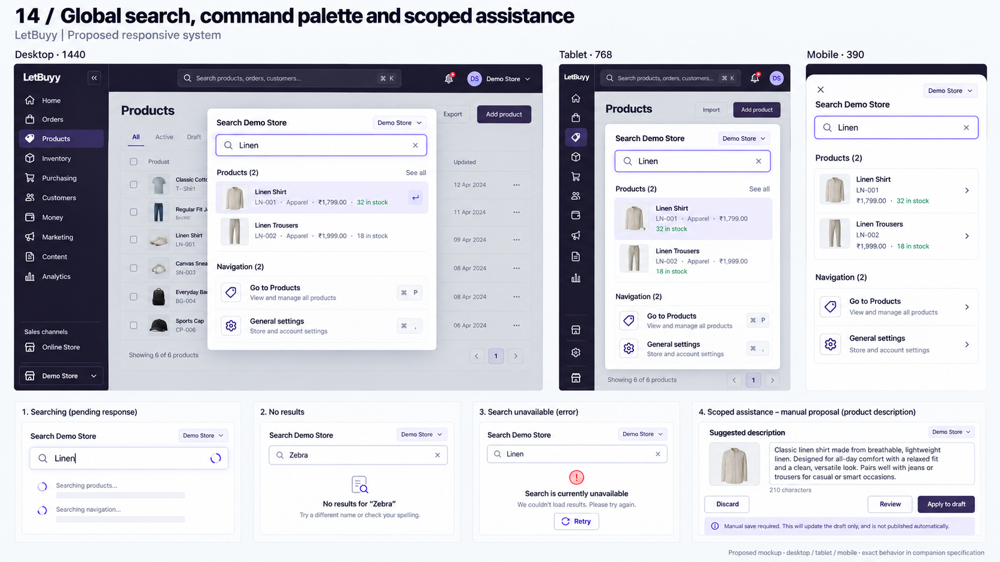
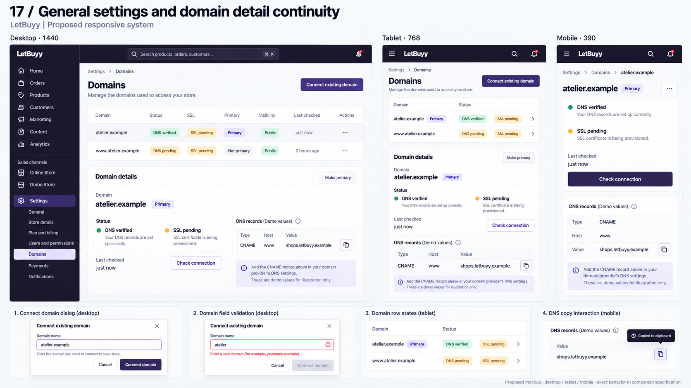

14 / Global search, command palette and scoped assistance
Desktop 1440 · Tablet 768 · Mobile 390 · planned

States and implementation contract
- Debounce/abort/stale response; typed error/no-match
- Named combobox/listbox behavior; store/record permission scope
- Deterministic/manual proposals remain honest; apply edits draft only
PAT-18 · PAT-24 · PAT-25 · PAT-30
Generation brief17 / General settings and domain detail continuity
Desktop 1440 · Tablet 768 · Mobile 390 · planned

States and implementation contract
- Addressable owned detail/reload/Back; nonsecret wizard continuity
- Copy DNS, independent statuses, check/retry/pending and authority
- Same form/header/SaveBar recipes for editable General settings
PAT-11 · PAT-12 · PAT-13 · PAT-14 · PAT-17 · PAT-19 · PAT-25
Generation brief